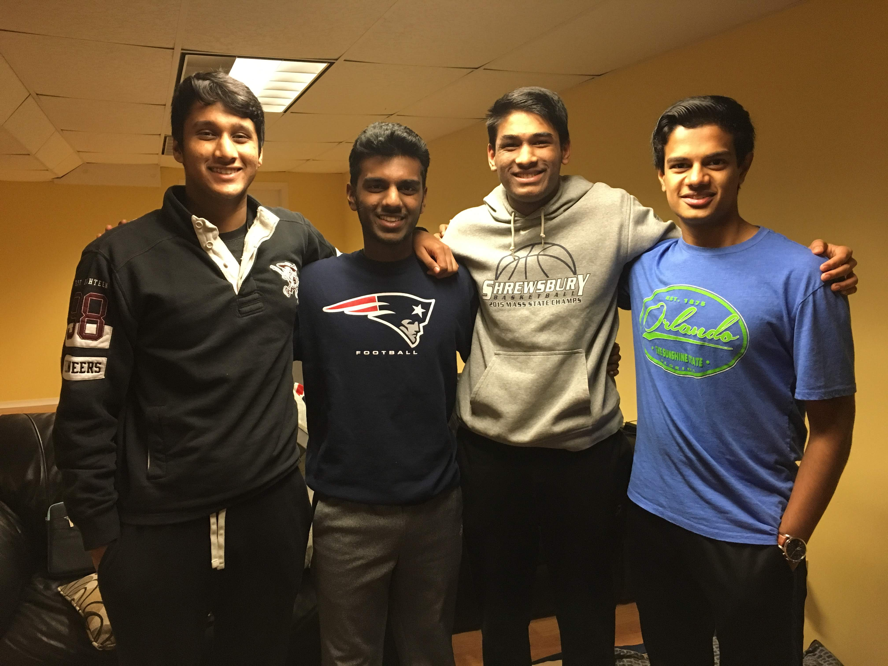

This class is taught by Mr. Regele. Coming from various sending schools, it is safe to say that no student of MAMS has had quite an experience as the one that Math Modeling brings. We are regularly challenged and encouraged to solve problems that could be applied to the real-world applications. When we are not working on these types of problems, we are given problem sets known as “Exeters.” These are generally algebra or geometry-based questions; however, they require a lot more application and thought than standard arithmetic problems. Often there are many approaches to correctly solve the same question.
As part of the curriculum of the Math Modeling course, all Juniors are required to participate in the 36-Hour Math Competition, also known as HiMCM. Students form groups of 3 or 4. Many groups choose to sleepover in the nights to get more work done, as well as come in and work in school as required. We are all given the choice between two problems, both being real-world applicable. However, both arithmetic and general knowledge are utilized to type out a solution using a software known as Mathematica.
My group (which included Danush Chelladurai, Avi Shah, and Bharath Heggadahalli) reviewed both of the prompts prior to beginning work. We ultimately chose the roller coaster ranking system one. This topic was selected as we decided it provided us with more liberty in solving the problem, rather than simply being an arithmetic process. As we went along with the problem, we utilized spreadsheet data on the specifications of the most popular roller coasters in the world. Characteristics that we deemed to be the most important were prioritized when factoring it in to the ranking algorithm. We wrote our paper with these criteria in mind. To see my group’s full paper, please click the heading above.
The previously mentioned software known as Mathematica is heavily utilized in this course to write up and solve Math Modeling assignments. One in particular was called State Population. In this assignment, each of the 50 juniors at MAMS is assigned one of the 50 states of America. We are then tasked to perform some data analysis on it. We are specifically asked to organize the data, and then add what is known as a Median-Median line to the graph of the data. To see my State Population writeup, please click the heading above.